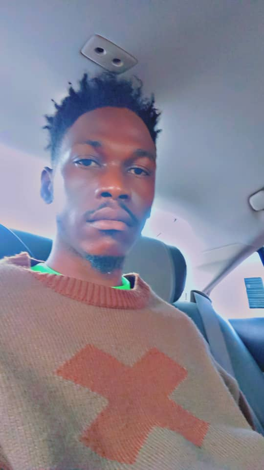
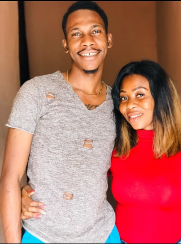
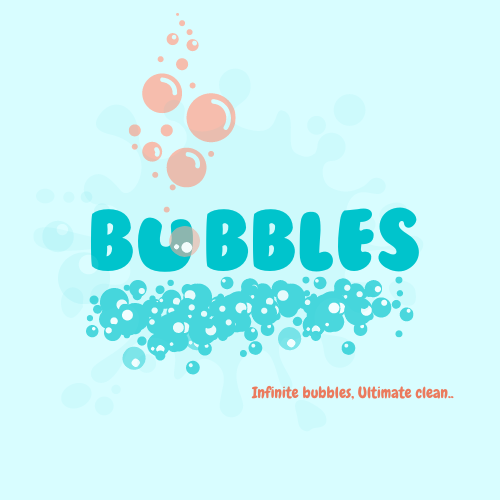
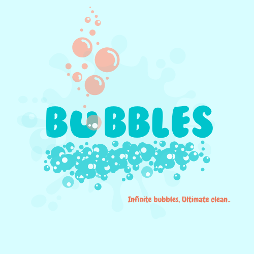

I’m Courage, an aspiring fullstack engineer with a strong passion for both tech and music. I love
immersing myself
into new projects, learning and pushing myself to improve my skills. I’m a dedicated
Liverpool FC fan, and I never miss a chance to cheer on my team. When I’m not working or watching
football, I enjoy reading books. I also have a keen interest in web3 and videography, exploring the
evolving tech landscape and capturing creative moments through video.

Motivation/Support
Motivation is the driving force that keeps us moving toward our goals, no matter how challenging the
path may seem. When we commit to daily learning, we create a cycle of curiosity and growth. However,
motivation isn't something we have to find alone. The support we receive from our family and
community is invaluable. At Altschool, the encouragement and guidance from mentors and peers provide
a strong foundation that pushes us to strive for excellence. Likewise, the unwavering support of
family reminds us of our purpose, offering both strength and reassurance during times of doubt.
Together, these support systems help us stay grounded, inspired, and focused on our journey toward
success.

What i'm currently listening to
For many coders, music serves as a crucial tool for enhancing focus and productivity. Among the
various genres that work well as background noise, house music stands out for its ability to create
a rhythmically steady atmosphere that complements deep concentration without overwhelming the mind.
One of the reasons house music is such an excellent choice for coding is its consistent 4/4 beat,
which provides a stable and predictable rhythm. This steady pace helps some coders enter a "flow"
state, where they can immerse themselves fully in their work. Unlike music with abrupt changes or
complex lyrics, house music’s repetitive, groovy beats allow for prolonged listening without causing
distractions. The rhythmic pulse can keep you energized and focused for long coding sessions.
.png) 
